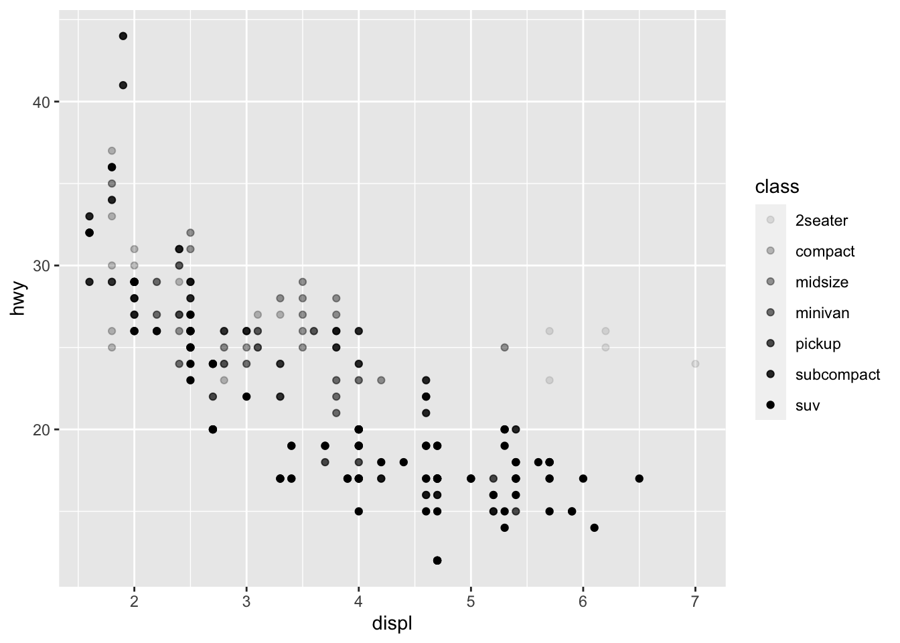
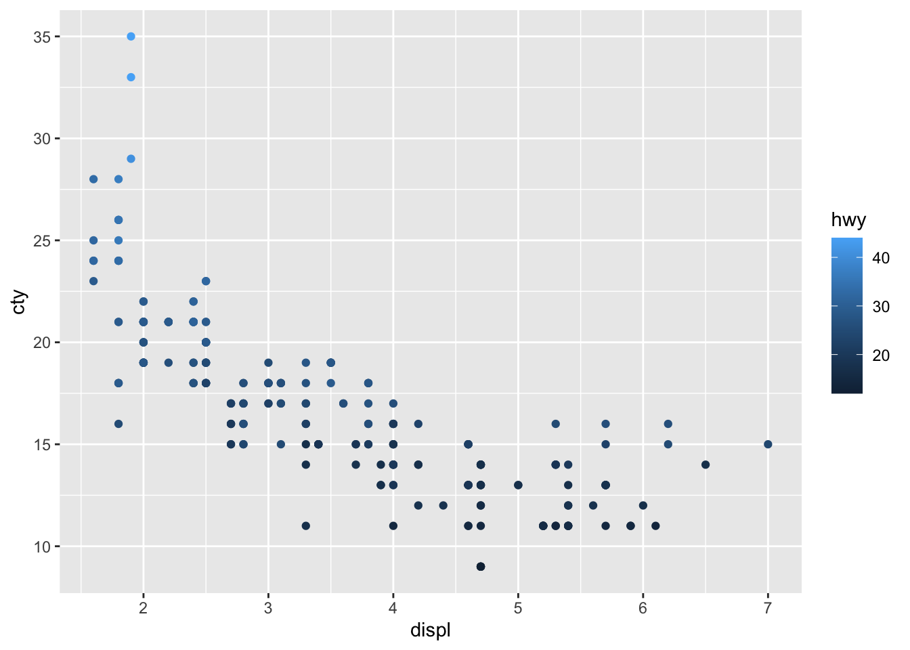
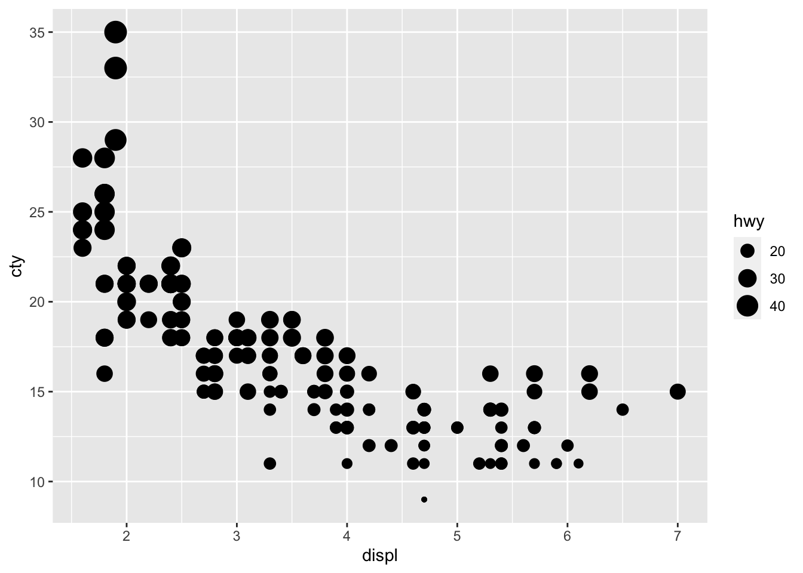
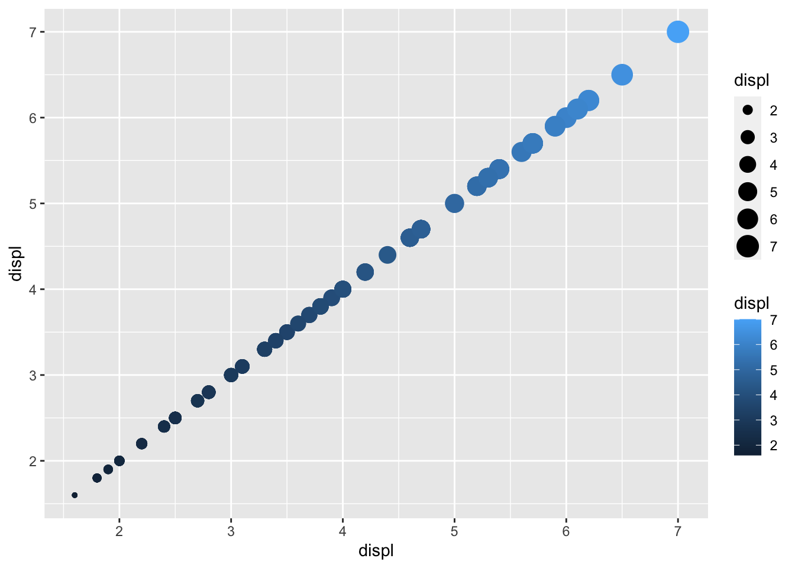
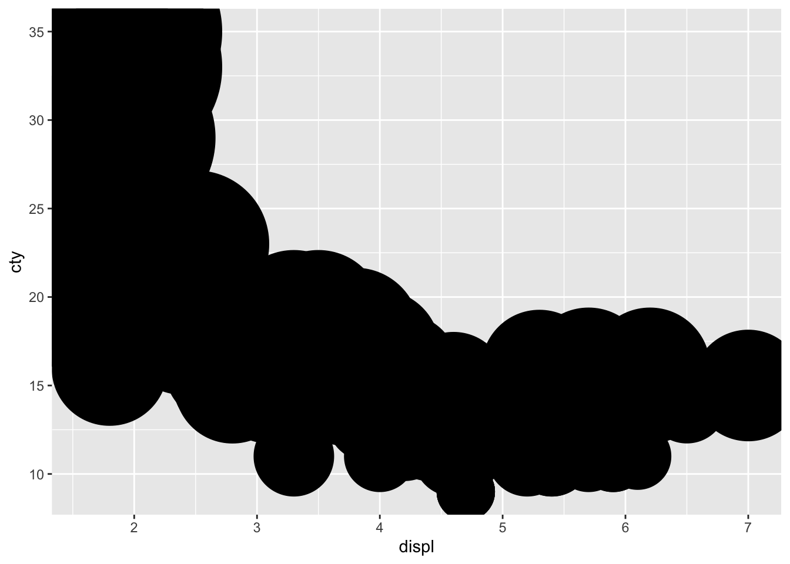
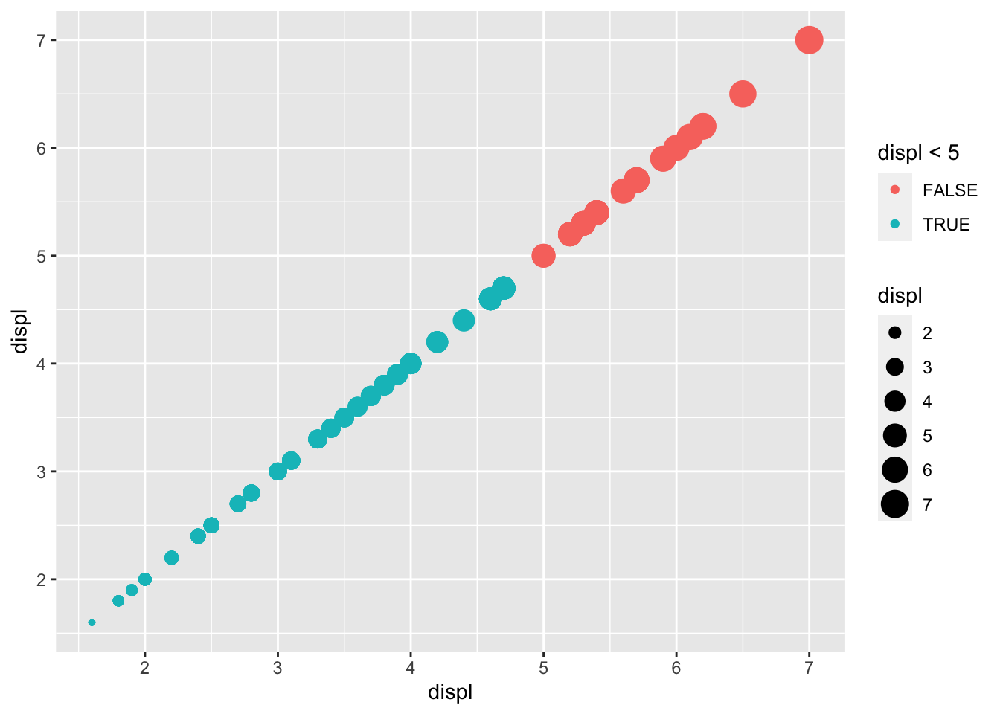

ggplot(data = mpg) + geom_point(mapping = aes(x=displ,y=hwy,color = class))
ggplot(data = mpg) + geom_point(mapping = aes(x=displ,y=hwy,color = class))
ggplot(data = mpg) + geom_point(mapping = aes(x=displ,y=hwy,size = class))Warning: Using size for a discrete variable is not advised.
ggplot(data = mpg) + geom_point(mapping = aes(x=displ,y=hwy,alpha = class))Warning: Using alpha for a discrete variable is not advised.
ggplot(data = mpg) + geom_point(mapping = aes(x=displ,y=hwy,shape = class))Warning: The shape palette can deal with a maximum of 6 discrete values because
more than 6 becomes difficult to discriminate; you have 7. Consider
specifying shapes manually if you must have them.Warning: Removed 62 rows containing missing values (`geom_point()`).
ggplot(data = mpg) + geom_point(mapping = aes(x=displ,y=hwy),color = "blue")
ggplot(data = mpg) + geom_point(mapping = aes(x=displ,y=hwy,color = "blue"))
color를 수동으로 설정하려면 aesthetic 바깥에 color 인수를 설정해야 한다. 즉, aes()바깥에 color = "blue" 를 사용해야 한다.
?mpg
summary(mpg) manufacturer model displ year
Length:234 Length:234 Min. :1.600 Min. :1999
Class :character Class :character 1st Qu.:2.400 1st Qu.:1999
Mode :character Mode :character Median :3.300 Median :2004
Mean :3.472 Mean :2004
3rd Qu.:4.600 3rd Qu.:2008
Max. :7.000 Max. :2008
cyl trans drv cty
Min. :4.000 Length:234 Length:234 Min. : 9.00
1st Qu.:4.000 Class :character Class :character 1st Qu.:14.00
Median :6.000 Mode :character Mode :character Median :17.00
Mean :5.889 Mean :16.86
3rd Qu.:8.000 3rd Qu.:19.00
Max. :8.000 Max. :35.00
hwy fl class
Min. :12.00 Length:234 Length:234
1st Qu.:18.00 Class :character Class :character
Median :24.00 Mode :character Mode :character
Mean :23.44
3rd Qu.:27.00
Max. :44.00 manufacturer, model, trans, drv, fl, class
ggplot(data = mpg) + geom_point(aes(x=displ, y = cty, color = hwy))
ggplot(data = mpg) + geom_point(aes(x=displ, y = cty, size = hwy))
ggplot(data = mpg) + geom_point(aes(x=displ, y = cty, shape = hwy))Error in `geom_point()`:
! Problem while computing aesthetics.
ℹ Error occurred in the 1st layer.
Caused by error in `scale_f()`:
! A continuous variable cannot be mapped to the shape aesthetic
ℹ choose a different aesthetic or use `scale_shape_binned()`ggplot(data = mpg) + geom_point(aes(x=displ, y = displ, color = displ, size = displ))
ggplot(data = mpg) + geom_point(aes(x=displ, y = cty, stroke = hwy))
ggplot(data = mpg) + geom_point(aes(x=displ, y = cty, stroke = class))Error in `geom_point()`:
! Problem while converting geom to grob.
ℹ Error occurred in the 1st layer.
Caused by error in `stroke_size * .stroke`:
! non-numeric argument to binary operatorggplot(data = mpg) + geom_point(aes(x=displ, y = displ, color = displ < 5, size = displ))